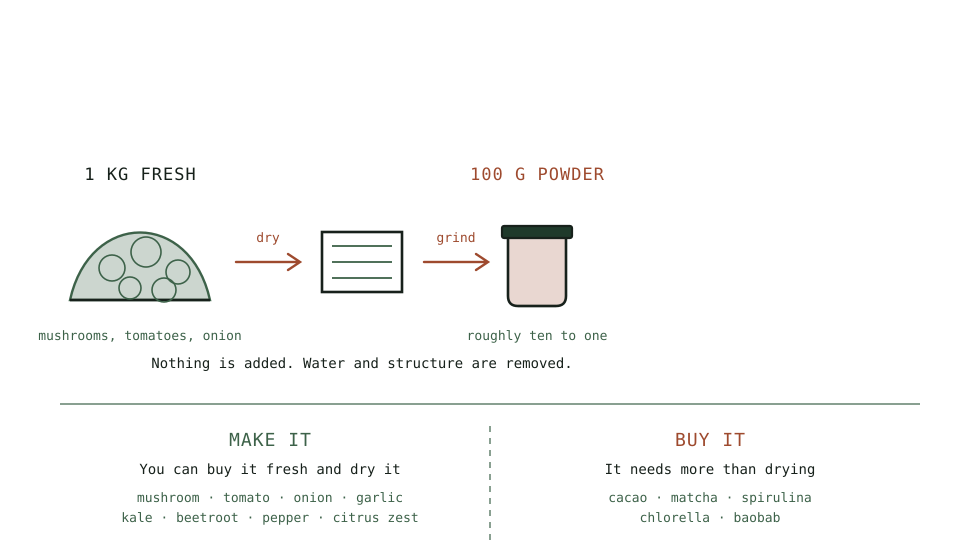

Guide
Tomato, Onion, Garlic: The Vegetable Powders Worth Making
Four powders that beat the supermarket versions outright, made from produce at its cheapest, with one that replaces an opened tube of tomato paste for good.
As an Amazon Associate this site earns from qualifying purchases. Links to products may be affiliate links. This costs you nothing extra and does not change what gets recommended. Nothing here is medical advice.
Tomato, Onion, Garlic: The Vegetable Powders Worth Making
These are the powders where home made most clearly beats bought, and where the raw material is cheapest.
Commercial garlic powder is frequently old and flat. Commercial onion powder is fine and unremarkable. Tomato powder is barely sold at all in most places despite solving a real everyday problem. All four of these are straightforward to make and noticeably better than what you can buy.
The powders hub sets out the make-or-buy principle. These sit firmly on the make side.

Tomato powder
The most useful of the four, because it solves a specific annoyance rather than merely replacing a jar.
The problem it solves. A recipe calls for a tablespoon of tomato paste. You open a tin or a tube, use the tablespoon, and the remainder sits in the refrigerator until it grows a skin and gets thrown away. This happens in most kitchens repeatedly.
Tomato powder has no such problem. Stir a spoonful into a little warm water and you have paste, made to exactly the quantity you need. The jar keeps for months.
Making it. Slice tomatoes at five millimetres, or halve cherry tomatoes, cut side up. Salt very lightly. Dry at fifty seven degrees.
Dry considerably longer than for eating. This is the important part. Tomatoes stay leathery by design when dried for storage, and leathery will not grind. They must go past that stage until they snap. Expect twelve to twenty hours rather than the ten you would use for slices.
Removing seeds and jelly speeds it up substantially for large tomatoes, at a small cost in flavour.
Grind and sieve once. Skins are the fibrous part and produce the coarse fraction.
Used dry it adds colour and savoury depth to rubs, spice mixes, bread dough, and pasta dough without adding any liquid, which is genuinely useful where extra moisture would be a problem.
Roughly one and a half kilograms of tomatoes produces a hundred grams of powder.
Onion powder
Cheap, easy, and the highest volume jar in most dried pantries.
No blanching. Onions have low enzyme activity and blanching would waterlog them.
Slice or dice at three millimetres. Dice is more useful for the soup base jar; slices grind identically.
Dry at fifty two degrees, six to ten hours, and again past the point where they merely feel dry.
Expect the smell. Drying onions perfumes a house thoroughly for the duration. This is worth anticipating before siting the machine near a bedroom, and it is a genuine argument for running the batch in a garage or utility room.
Grind and sieve. Onion grinds cleanly and produces very little coarse fraction.
Store it well. Onion powder is hygroscopic and clumps readily. Small jars, airtight, with a desiccant.
Home made onion powder is not dramatically better than bought, and it is much cheaper and it means you always have some.
Garlic powder
This is the one where the difference is unmistakable.
Commercial garlic powder is frequently old, and garlic loses its character quickly once ground. A fresh home made version smells and tastes like garlic rather than like a beige suggestion of it.
Peel and slice thin, around two millimetres. A mandoline makes this bearable, since peeling and slicing a large quantity of garlic by hand is tedious work.
Do not blanch. You would pour away exactly what you are drying it for.
Fifty two degrees, six to eight hours. Keep the temperature down; garlic scorches and turns bitter above about fifty five.
Dry until it snaps. Garlic holds moisture in the centre of each slice longer than it appears to.
Grind last in any session, because garlic contaminates a grinder more persistently than anything else, which is the argument for a larger grinder with a detachable bowl and its detachable bowl. The grinding guide covers cleaning and the case for a second grinder.
Granules rather than powder is worth considering. A coarser grind keeps better and is easier to measure, and full powder clumps faster.
Four hundred grams of garlic produces about a hundred grams of powder, which is a lot of garlic powder.
Celery, and celery salt
A quieter one that earns its place.
Celery leaves and stalks both dry well. The pale inner leaves are the most strongly flavoured part and are usually discarded.
Slice stalks thin, keep the leaves whole, and dry at fifty two degrees until brittle.
Ground celery mixed with flaky salt at roughly one to four makes celery salt, which is expensive to buy and excellent on eggs, tomatoes, in a bloody mary, and through a potato salad.
Celery powder alone is a good component of a soup base blend and unremarkable on its own.
One note worth knowing: celery powder is sometimes used commercially as a curing agent because of its naturally occurring nitrates. That is a different application with different requirements, and home celery powder should not be treated as a curing salt substitute.
Beetroot
Made for colour as much as flavour.
Peel, slice thin, and dry at fifty two degrees. Beetroot takes longer than it looks like it should and it stains everything it touches, including your hands and the grinder bowl.
The powder is an intense magenta and it goes into doughs, icings, smoothies, and anything you want to colour naturally. The flavour is earthy and sweet and mild enough not to interfere in small quantities.
Beetroot is also the vegetable powder with the most legitimate research interest attached, since dietary nitrate and exercise performance has a reasonable body of human study behind it. That does not make it a supplement, and any specific claim is worth checking against current evidence rather than taking on trust. Nothing here is medical advice.
Expect nine hundred grams of beetroot to yield about a hundred grams of powder, which is why a ready made organic beetroot powder is the one item on this page where buying is a defensible alternative to making.
One consistency note. Root vegetables take up trace metals from soil, and bought root powders sometimes carry a heavy metal warning on the label for that reason. It is the same sourcing question this site raises about algae, and the same answer applies: ask the supplier what they test for.
Peppers and chilli
Sweet peppers dry into a powder that is somewhere between paprika and tomato, sweet and mildly savoury. Strips at five millimetres, fifty two degrees.
Chilli grinds to whatever heat and coarseness you want, which is the point. Commercial chilli powder is a blend of unknown composition and unknown age; yours is not.
Wear gloves and grind chilli last. Capsaicin lingers on grinder parts and in the air, and this is the one ingredient where the dust genuinely hurts.
Smoked paprika at home requires smoking before drying, which is a different project, and buying it is reasonable.
Making the soup base
The single most used jar in most dried pantries, assembled from the powders above.
Dry onion, carrot, celery, and leek separately, since they take different times. Grind each, then combine in roughly equal parts by volume with a spoonful of garlic powder and a good pinch of dried herbs.
A heaped teaspoon plus hot water is a stock. Two spoonfuls plus water and a tin of tomatoes is the start of almost any soup.
Keep it small enough to turn over in two months, since a jar you finish beats a jar you preserve. Keep it near where you cook rather than with the rest of the dried stores.
Powders from what you would throw away
The cheapest jars in this hub come from parts of vegetables that usually go in the bin, and they are worth collecting deliberately.
Broccoli and cauliflower stalks. Sliced thin and dried, they grind into a mild green-white powder that disappears into sauces. Most of the plant by weight and almost always discarded.
Onion and leek tops. The dark green parts of leeks and the tough outer layers of onions both dry and grind, and they are more strongly flavoured than the pale parts.
Celery leaves. Intensely flavoured and removed by most people. Excellent in a soup base.
Carrot tops. Divisive fresh and good dried, with a parsley-like character.
Beetroot and radish tops. Sold attached and thrown away. Both dry into decent green powder.
Herb stems. Parsley and coriander stems carry as much flavour as the leaves and are fibrous enough to be unpleasant fresh. Dried and ground, that fibrousness stops mattering.
Mushroom stems. Covered on the mushroom page and worth repeating, since they are tougher than the caps and identical once powdered.
Keep a bag in the freezer for offcuts and dry a batch when it fills. This is the closest thing in this hub to free food, and it produces a genuinely useful all-purpose vegetable powder for stocks and sauces.
RUN THE NUMBERS
Illustrative figures. Yields and times vary with produce and machine.
| Powder | Temperature | Fresh for 100 g | Notes |
|---|---|---|---|
| Tomato | 57 C | About 1.4 kg | Dry far past leathery |
| Onion | 52 C | About 1 kg | Perfumes the house |
| Garlic | 52 C | About 400 g | Grind last, consider granules |
| Celery | 52 C | About 1.2 kg | Makes celery salt |
| Beetroot | 52 C | About 900 g | Stains everything |
| Sweet pepper | 52 C | About 1.2 kg | Sweet and mild |
| Chilli | 52 C | Varies | Gloves, grind last |
All of these are cheapest bought in season or reduced, and all of them tolerate produce that is past its best for eating fresh.
WHAT GOES WRONG
Tomato that will not grind. Dried for storage rather than for powder. It must snap, which takes far longer than most guides suggest.
Bitter garlic. Dried too hot. Keep it at or below fifty two degrees.
Onion powder set solid in the jar. Humidity. Onion is the most hygroscopic of these. Small jars and a desiccant.
Everything tastes of garlic. Grinder not cleaned, or garlic ground before milder things.
Pink hands and a pink grinder. Beetroot. There is no fix, only warning.
Chilli dust in the eyes. Opened the grinder too soon. Thirty seconds, and consider doing it outside.
A whole house smelling of onion for a day. Entirely normal. Site the machine accordingly.
DO THIS NOW
- Dry a tray of tomatoes for powder specifically, which means going hours past the point where they look done, until a cooled piece snaps.
- Slice a head of garlic thin, dry at 52 C, and grind it last in the session.
- Combine onion, carrot, celery, and leek powders in equal parts with garlic and herbs to make a soup base jar.
- Keep that jar next to the stove rather than with the rest of your dried stores.
Next
The most useful powder of all is the one that dissolves invisibly into anything savoury. Mushroom powder, the most useful jar covers making it from mushrooms at their cheapest.
Dryness, burst length, and sieving decide whether any of these comes out as powder or paste. Grinding and sieving covers all three.